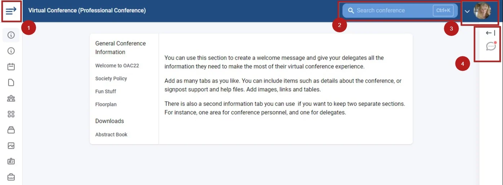
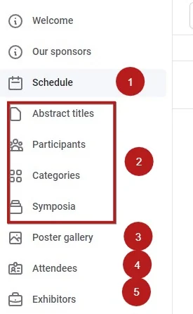
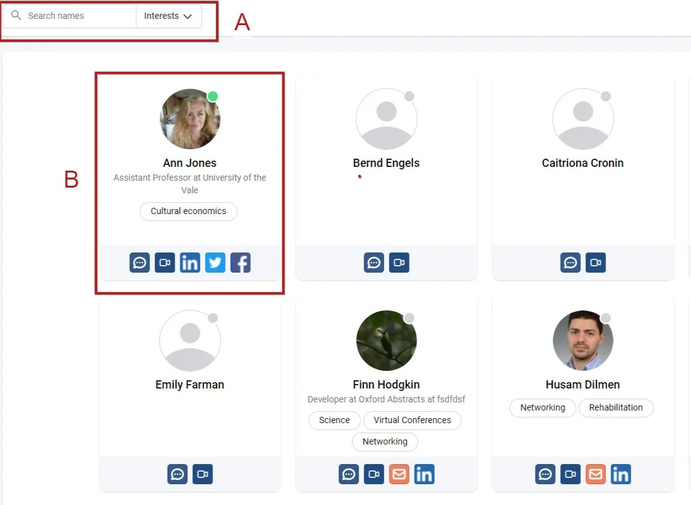
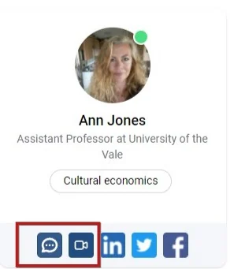
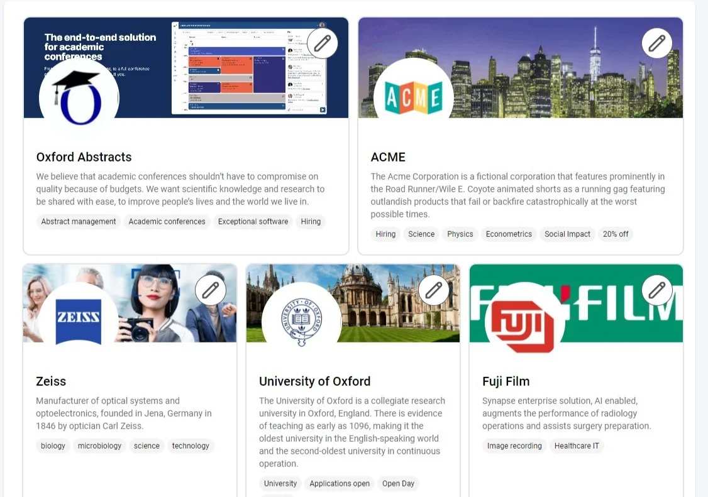
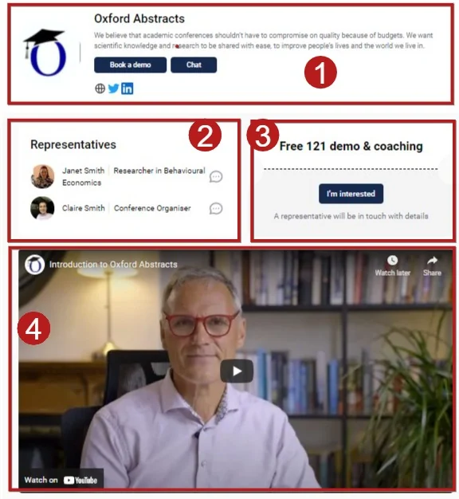

Exploring the conference platform
For conference attendeesOrganising the event?
The conference platform offers a schedule / program with lots of dynamic content and interactive content. You can network with delegates with the chat feature and interact with sessions and content such as live and on-demand videos.#
Some of the features viewed below are not available on the Standard Conference Package.
Once you have created an account and logged in to the conference, you will be taken to the welcome screen.
1) Click the icon below in the top left corner to reveal the full menu below.
2) Search - this is a universal search and will include all content throughout the program.
NB: Searches will return the following:
Authors and presenters, submission / abstract/ symposium titles, session titles, symposium and session chairs, symposium discussants.
Author affiliations, content of submissions, session descriptions and comments are not included.
3) Access your profile (See Setting up your conference account).
4) Access the chat feature

The full menu

The menu will vary, depending on the set up of the conference).1) Click to view the full program/ schedule and sessions and content
2) Search and filter content by these options
3) Access the Poster Gallery
4) View and network with other attendees.
5) View the conference Exhibitors
Attendees
Clicking on Attendees allows you to view all the other conference attendees and their profiles. You can
A) Search according to name and/ or interest
B) View individual profiles, including their profile picture, role, interest(s) and their networks

The first two buttons allow you to (from left to right) chat, and video call.

Exhibitors
Clicking on the Exhibitors link takes you to the Exhibitor Space.

Click on your chosen Exhibitor to access their booth.
You can then
1) View their profile, contact buttons and networks
2) View and contact their representatives directly
3) Access any special offers
4) View promotional material.

Did this page solve it?
Thanks — this helps us fix it.